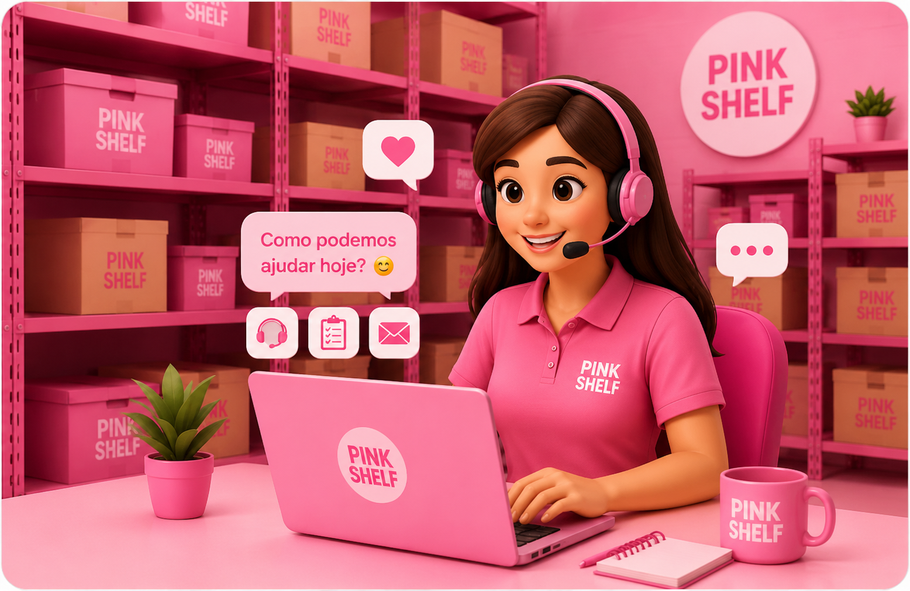

Suporte
Estamos aqui para ajudar você com dúvidas, suporte dos planos e funcionamento do sistema.

Suporte por Plano
Encontre respostas rápidas ou veja o tipo de suporte disponível para seu plano.
Plano Básico
Suporte para dúvidas simples sobre cadastro de peças, acesso ao sistema e organização inicial do estoque.
Resposta em até 48hPlano Premium
Suporte para dúvidas sobre controle de estoque, relatórios, edição de produtos e acompanhamento das vendas.
Resposta em até 24hPlano Pink Elite
Atendimento prioritário para dúvidas, ajustes, relatórios, alertas de estoque baixo e acompanhamento completo.
Resposta em até 6hPerguntas frequentes
Como cadastrar uma peça no estoque?
Acesse a página de estoque, clique na opção de cadastrar peça e preencha as informações como nome, tamanho, categoria, preço e quantidade.
Consigo editar uma peça já cadastrada?
Sim. Basta localizar a peça no estoque, clicar em editar e alterar as informações necessárias.
O sistema avisa quando o estoque está baixo?
Sim. Os planos Premium e Pink Elite possuem alertas automáticos para ajudar no controle do estoque.
Posso visualizar relatórios?
Sim. Os relatórios ajudam a acompanhar vendas, produtos mais vendidos e desempenho do estoque.
Como entro em contato com o suporte?
Você pode utilizar o formulário acima, informando seu nome, e-mail, plano contratado e sua dúvida.